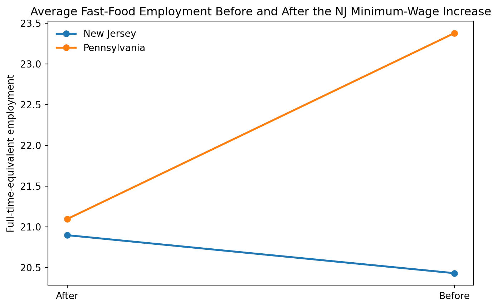

import pandas as pd
import numpy as np
import statsmodels.formula.api as smf
import matplotlib.pyplot as plt
from scipy import statsReplication of Card and Krueger (1994)
Minimum Wages and Employment: A Case Study of the Fast Food Industry in New Jersey and Pennsylvania
Introduction
In Minimum Wages and Employment: A Case Study of the Fast-Food Industry in New Jersey and Pennsylvania, David Card and Alan Krueger study whether raising the minimum wage reduces employment. Their natural experiment is New Jersey’s increase in the state minimum wage from $4.25 to $5.05 on April 1, 1992, while neighboring Pennsylvania kept its minimum wage unchanged. The authors surveyed fast-food restaurants in both places before and after the policy change and then compared employment changes across the two states.
This design is a classic difference-in-differences strategy. The idea is not just to compare New Jersey to Pennsylvania after the law, because the two states may differ for many reasons. It is also not enough to compare New Jersey before and after the law, because the whole regional economy was changing in 1992. Instead, the key estimate compares the change in employment in New Jersey to the change in employment in Pennsylvania. If Pennsylvania is a reasonable counterfactual for what would have happened in New Jersey without the policy, the difference in those changes isolates the causal effect of the minimum-wage increase.
The paper’s headline result is surprising from the perspective of a simple competitive labor-market model: employment in New Jersey fast-food restaurants did not fall after the minimum wage increase, and some estimates are actually positive.
Main Analysis
Read the data
The dataset is a fixed-width ASCII file, so the main challenge is telling Python where each variable starts and ends.
# Fixed-width column locations from the codebook
colspecs = [
(0,3),(4,5),(6,7),(8,9),(10,11),(12,13),(14,15),(16,17),(18,19),(20,21),
(22,24),(25,30),(31,36),(37,42),(43,48),(49,54),(55,60),(61,62),(63,68),
(69,70),(71,76),(77,82),(83,88),(89,94),(95,100),(101,103),(104,106),
(107,108),(109,110),(111,117),(118,120),(121,126),(127,132),(133,138),
(139,144),(145,150),(151,156),(157,158),(159,160),(161,166),(167,172),
(173,178),(179,184),(185,190),(191,193),(194,196)
]
cols = [
"sheet","chain","co_owned","state","southj","centralj","northj","pa1","pa2","shore",
"ncalls","empft","emppt","nmgrs","wage_st","inctime","firstinc","bonus","pctaff",
"meals","open","hrsopen","psoda","pfry","pentree","nregs","nregs11","type2",
"status2","date2","ncalls2","empft2","emppt2","nmgrs2","wage_st2","inctime2",
"firstin2","special2","meals2","open2r","hrsopen2","psoda2","pfry2","pentree2",
"nregs2","nregs112"
]
df = pd.read_fwf("njmin/public.dat", colspecs=colspecs, names=cols, dtype=str)
# Convert "." to missing and cast to numeric
for c in cols:
df[c] = pd.to_numeric(df[c].replace(".", np.nan), errors="coerce")
df.head()| sheet | chain | co_owned | state | southj | centralj | northj | pa1 | pa2 | shore | ... | firstin2 | special2 | meals2 | open2r | hrsopen2 | psoda2 | pfry2 | pentree2 | nregs2 | nregs112 | |
|---|---|---|---|---|---|---|---|---|---|---|---|---|---|---|---|---|---|---|---|---|---|
| 0 | 46 | 1 | 0 | 0 | 0 | 0 | 0 | 1 | 0 | 0 | ... | 0.08 | 1.0 | 2.0 | 6.5 | 16.5 | 1.03 | NaN | 0.94 | 4.0 | 4.0 |
| 1 | 49 | 2 | 0 | 0 | 0 | 0 | 0 | 1 | 0 | 0 | ... | 0.05 | 0.0 | 2.0 | 10.0 | 13.0 | 1.01 | 0.89 | 2.35 | 4.0 | 4.0 |
| 2 | 506 | 2 | 1 | 0 | 0 | 0 | 0 | 1 | 0 | 0 | ... | 0.25 | NaN | 1.0 | 11.0 | 11.0 | 0.95 | 0.74 | 2.33 | 4.0 | 3.0 |
| 3 | 56 | 4 | 1 | 0 | 0 | 0 | 0 | 1 | 0 | 0 | ... | 0.15 | 0.0 | 2.0 | 10.0 | 12.0 | 0.92 | 0.79 | 0.87 | 2.0 | 2.0 |
| 4 | 61 | 4 | 1 | 0 | 0 | 0 | 0 | 1 | 0 | 0 | ... | 0.15 | 0.0 | 2.0 | 10.0 | 12.0 | 1.01 | 0.84 | 0.95 | 2.0 | 2.0 |
5 rows × 46 columns
Construct the variables used in the paper
# Full-time-equivalent employment
df["emptot"] = df["empft"] + 0.5 * df["emppt"] + df["nmgrs"]
df["emptot2"] = df["empft2"] + 0.5 * df["emppt2"] + df["nmgrs2"]
# Price of a full meal
df["pmeal"] = df["psoda"] + df["pfry"] + df["pentree"]
df["pmeal2"] = df["psoda2"] + df["pfry2"] + df["pentree2"]
# Store closed permanently in wave 2
df["closed"] = (df["status2"] == 3)
# The paper sets wave-2 employment to zero for permanently closed stores
df["emptot2_table"] = df["emptot2"]
df.loc[df["closed"], "emptot2_table"] = 0
# Main change in employment
df["demp"] = df["emptot2_table"] - df["emptot"]
# New Jersey indicator
df["nj"] = df["state"]
# Wage gap variable from the paper / SAS code:
# proportional wage increase needed to reach $5.05
df["gap"] = np.where(
df["state"] == 0,
0,
np.where(
df["wage_st"] >= 5.05,
0,
np.where(df["wage_st"] > 0, (5.05 - df["wage_st"]) / df["wage_st"], np.nan)
)
)
# Chain dummies for regressions
df["bk"] = (df["chain"] == 1).astype(int)
df["kfc"] = (df["chain"] == 2).astype(int)
df["roys"] = (df["chain"] == 3).astype(int)
df["wendys"] = (df["chain"] == 4).astype(int)
# Wage change, used to match the sample restriction in the original SAS code
df["dwage"] = df["wage_st2"] - df["wage_st"]Replicate the key difference-in-differences result
The paper’s Table 3 reports mean employment before and after the policy. The most important row is the balanced sample: stores with valid employment data in both waves, with permanently closed stores counted as zero in wave 2 and temporarily closed stores treated as missing. The paper reports a difference-in-differences estimate of about 2.76 full-time-equivalent workers.
# Balanced sample: valid employment in both waves after setting permanent closures to zero
balanced = df[df["emptot"].notna() & df["emptot2_table"].notna()].copy()
summary = (
balanced
.groupby("nj")[["emptot", "emptot2_table", "demp"]]
.mean()
.rename(index={0: "Pennsylvania", 1: "New Jersey"},
columns={"emptot": "Before", "emptot2_table": "After", "demp": "Change"})
)
summary| Before | After | Change | |
|---|---|---|---|
| nj | |||
| Pennsylvania | 23.380000 | 21.096667 | -2.283333 |
| New Jersey | 20.430583 | 20.897249 | 0.466667 |
did = summary.loc["New Jersey", "Change"] - summary.loc["Pennsylvania", "Change"]
didnp.float64(2.75)A simple t-test version of the difference in differences
nj_change = balanced.loc[balanced["nj"] == 1, "demp"]
pa_change = balanced.loc[balanced["nj"] == 0, "demp"]
t_stat, p_val = stats.ttest_ind(nj_change, pa_change, equal_var=False)
print(f"NJ mean change: {nj_change.mean():.3f}")
print(f"PA mean change: {pa_change.mean():.3f}")
print(f"Difference-in-differences: {did:.3f}")
print(f"t-statistic: {t_stat:.3f}")
print(f"p-value: {p_val:.3f}")NJ mean change: 0.467
PA mean change: -2.283
Difference-in-differences: 2.750
t-statistic: 2.049
p-value: 0.043The replicated estimate is about 2.75 to 2.76 FTE employees, which is essentially the same as the paper’s reported 2.76. That means the raw difference-in-differences result matches the published result very closely.
Regression-adjusted replication of Table 4
Card and Krueger also estimate regression models for the change in employment. Their Table 4, column (ii), adds controls for restaurant chain and company ownership and reports a coefficient of about 2.30 on the New Jersey indicator.
To match their sample, I follow the same rule used in the original SAS code: keep stores with non-missing employment change, and for non-closed stores require valid wage data in both waves.
reg_sample = df[
df["demp"].notna() &
(
(df["closed"]) |
((~df["closed"]) & df["dwage"].notna())
)
].copy()
len(reg_sample)357model_nj = smf.ols("demp ~ nj + bk + kfc + roys + co_owned", data=reg_sample).fit()
model_gap = smf.ols("demp ~ gap + bk + kfc + roys + co_owned", data=reg_sample).fit()
print(model_nj.summary().tables[1])
print(model_gap.summary().tables[1])==============================================================================
coef std err t P>|t| [0.025 0.975]
------------------------------------------------------------------------------
Intercept -2.2091 1.613 -1.369 0.172 -5.382 0.964
nj 2.3039 1.196 1.927 0.055 -0.047 4.655
bk 0.5120 1.498 0.342 0.733 -2.435 3.459
kfc 1.0042 1.686 0.595 0.552 -2.313 4.321
roys -1.7050 1.682 -1.014 0.311 -5.013 1.603
co_owned 0.3080 1.094 0.282 0.778 -1.843 2.459
==============================================================================
==============================================================================
coef std err t P>|t| [0.025 0.975]
------------------------------------------------------------------------------
Intercept -1.3014 1.374 -0.947 0.344 -4.004 1.401
gap 14.9157 6.205 2.404 0.017 2.711 27.120
bk -0.0136 1.515 -0.009 0.993 -2.994 2.966
kfc 0.6453 1.696 0.381 0.704 -2.690 3.981
roys -1.9258 1.683 -1.144 0.253 -5.236 1.384
co_owned 0.4089 1.092 0.374 0.708 -1.739 2.557
==============================================================================results = pd.DataFrame({
"Model": ["NJ dummy + controls", "Gap + controls"],
"Coefficient": [model_nj.params["nj"], model_gap.params["gap"]],
"Std. Error": [model_nj.bse["nj"], model_gap.bse["gap"]],
"N": [int(model_nj.nobs), int(model_gap.nobs)]
})
results| Model | Coefficient | Std. Error | N | |
|---|---|---|---|---|
| 0 | NJ dummy + controls | 2.303860 | 1.195532 | 357 |
| 1 | Gap + controls | 14.915674 | 6.205335 | 357 |
This regression-adjusted replication should give a coefficient of about 2.30 on the New Jersey dummy and about 14.92 on the wage-gap measure, which closely matches Table 4 in the paper.
Something Additional
For my additional contribution, I turn the main employment comparison into a figure. The original paper reports the key before-and-after means in a table. A graph makes the difference-in-differences design more intuitive: employment falls in Pennsylvania but rises slightly in New Jersey, so the gap in trends is positive.
plot_df = (
balanced
.assign(state_name=np.where(balanced["nj"] == 1, "New Jersey", "Pennsylvania"))
.groupby("state_name")[["emptot", "emptot2_table"]]
.mean()
.reset_index()
.melt(id_vars="state_name", value_vars=["emptot", "emptot2_table"],
var_name="period", value_name="fte")
)
plot_df["period"] = plot_df["period"].map({
"emptot": "Before",
"emptot2_table": "After"
})
plot_df| state_name | period | fte | |
|---|---|---|---|
| 0 | New Jersey | Before | 20.430583 |
| 1 | Pennsylvania | Before | 23.380000 |
| 2 | New Jersey | After | 20.897249 |
| 3 | Pennsylvania | After | 21.096667 |
fig, ax = plt.subplots(figsize=(8, 5))
for state_name, sub in plot_df.groupby("state_name"):
sub = sub.sort_values("period")
ax.plot(sub["period"], sub["fte"], marker="o", linewidth=2, label=state_name)
ax.set_title("Average Fast-Food Employment Before and After the NJ Minimum-Wage Increase")
ax.set_ylabel("Full-time-equivalent employment")
ax.set_xlabel("")
ax.legend(frameon=False)
plt.show()
The figure shows the central logic of the paper. If New Jersey had followed the same trend as Pennsylvania, we would have expected employment to fall there as well. Instead, the New Jersey line slopes slightly upward while the Pennsylvania line slopes downward. That visual difference is exactly the positive difference-in-differences estimate replicated above.
Conclusion
This replication lines up really closely with Card and Krueger’s main result. Using the same New Jersey–Pennsylvania fast food data, I get a difference-in-differences estimate of about 2.76 full-time-equivalent employees, which is basically identical to what they report. The regression version tells the same story too—the New Jersey effect is around 2.30, again matching the paper pretty well.
More broadly, this exercise shows why difference-in-differences is such a useful tool. Instead of just comparing places or just comparing time periods, it looks at how things change across both. In this case, that approach suggests that the minimum wage increase in New Jersey didn’t reduce employment in fast food restaurants the way a simple economic model might predict.